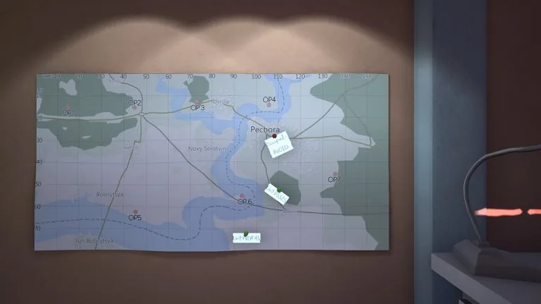
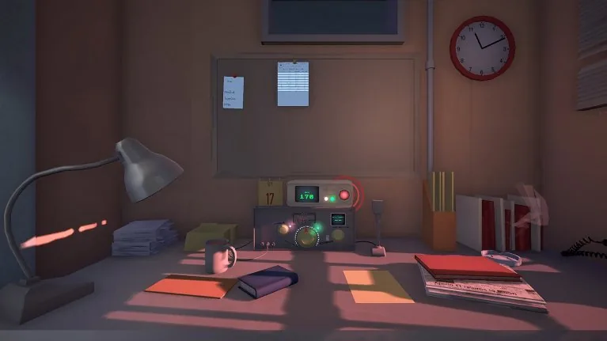
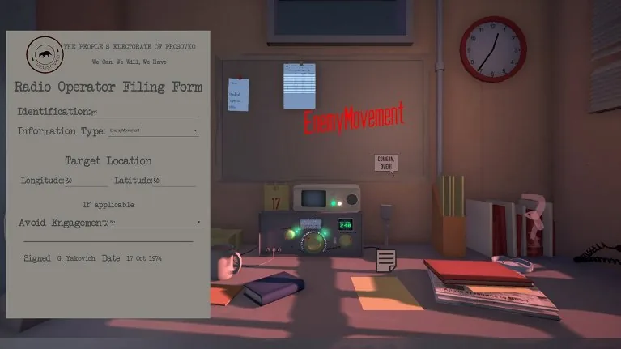
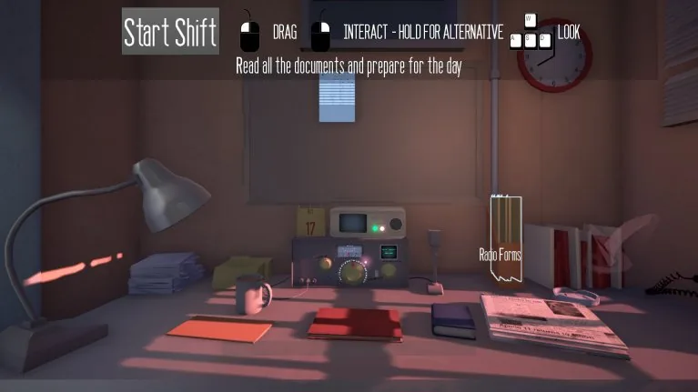

Come In, Over
- Year
- 2016
- Platform
- PC
- Engine
- Unreal Engine




A puzzle strategy game inspired by Papers, Please. You are a radio operator working for the government of Prosovko, which is enduring a revolt. Both sides are undesirable, your interests lie with the citizens, and in war casualties are inevitable, but you can limit them.
My role
I designed and developed Come In, Over for my final year project, taking it from concept to completion in a little under eight months.
What I did
- Designed and built the whole game, from concept to completion
- Written about by 80 Level in “Building a game with one level”
- Entered into The Rookies Game of the Year